Generate K lines in a degraded image
Generate 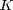 lines with parameters 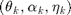 where:
- 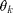 is the angle of the line
- 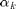 is the amplitude of the line
- 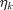 is the horizontal offset of the line
Lines are blurred with a horizontal filter 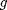 and a vertical one 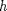. The image of size 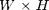 degraded by some noiselevel is called 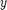.
global h hadj hfourextend Hs M Gfour S; S=ceil(spread*4)-1; % half-length of the discrete filter h Hs=H+2*S; % height after adding S pixels beyond border M=(W-1)/2; % half-width of the image h=exp(-((-S:S)'/spread).^2/2); % the Gaussian filter h h=h/sum(h); % filter normalization vstar=zeros((H+2*S),W); % image of the lines horizontally blurred g=h; % same blur g horizontally and h vertically
Compute 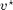 thanks to these two relations:
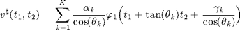
for k=1:K, Angle=t_k(k); % the angle of line with respect to -y axis a_k(k)=a_k(k)/max(h); % after blurring a_k*h is at most equal to 255 amplitude=a_k(k); % horizontal offset p_k from the image's center offset=p_k(k); % may varying between -M and M for n2=1:(H+2*S), t=(0:W-1)-M+tan(Angle)*((H+1)/2+S-n2)-offset; vec=zeros(1,W); for n=-S:S, % Dirichlet : sin(pi*(t-n))./sin(pi*(t-n)/W); vec=vec+g(n+S+1)*arrayfun(@(x) Dirichlet_Kernel(x,W),t-n); end vstar(n2,:)=vstar(n2,:)+amplitude/cos(Angle)*vec/W; end end xstar=conv2(vstar,h,'valid'); % vertical blur convolution noise=randn(H,W)*noiselevel; % additionnal Gaussian noise y=xstar+noise; % degraded image %imwrite(uint8(y),'degraded.tif');
We display the images  , 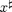 and
, 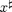 and
if plotData f=figure; subplot(1,3,1); imagesc(vstar); colormap gray; axis image; title('$$v^{\sharp}$$','Interpreter','latex'); set(gca,'xtick',[],'ytick',[]); subplot(1,3,2); imagesc(xstar); colormap gray; axis image; title('$$x^{\sharp}$$','Interpreter','latex'); set(gca,'xtick',[],'ytick',[]); subplot(1,3,3); imagesc(y); colormap gray; axis image; title('$$y$$','Interpreter','latex'); set(gca,'xtick',[],'ytick',[]); warning off; truesize(f,[200 200]); tightfig; end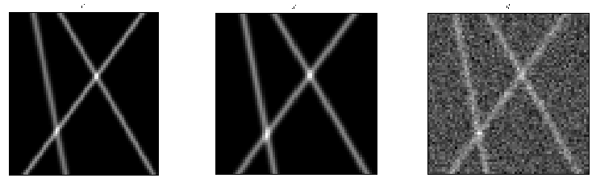
We compute the FFT of these filters for a later use
gextend = [zeros(M-S,1) ; g ; zeros(M-S,1)]; % size 2M+1=W cause we need gfour=fftshift(fft(ifftshift(gextend))); % W Fourier coefficients ^g[m] Hm=(Hs-1)/2; hextend=[zeros(Hm-S,1) ; h ; zeros(Hm-S,1)]; hfourextend=fftshift(fft(ifftshift(hextend))); Gfour=diag(gfour(M+1:end)); % matrix diag containing the Fourier coefs hadj=conj(flipud(h)); % filter of the adjoint of convolution by h
At this stage, we have all we need to perform the minimization on the data which is the degraded image, in order to recover the solution 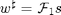 and then the parameters of lines.
The exact solution 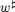 we want to recover is
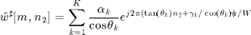
% Theoritical formula for wstar wstar=zeros((H+2*S),W); for n2=1:(H+2*S) for m=-M:M wstar(n2,m+M+1)=sum(a_k./cos(t_k).*exp(1i*2*pi*... (tan(t_k).*((H+1)/2+S-n2)-p_k).*m/W)); end end
We compute other images to compare with the future provided solution
Compare theoritical and empirical 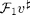
% Theoritical formula for F_1(v) vfourtheo=zeros(Hs,W); for m=1:W vfourtheo(:,m)=wstar(:,m).*gfour(m); end % Compute empirical F_1(v) vfouremp=zeros((H+2*S),W); for n2=1:(H+2*S) vfouremp(n2,:) = fftshift(fft(ifftshift(vstar(n2,:)))); % horizontal FFT end if plotComp f=figure; subplot(1,2,1); imagesc(abs(vfourtheo)); colormap gray; axis image; title('Theoritical'); xlabel('$$\mathcal{F}_1 v^{\sharp}$$','Interpreter','latex'); set(gca,'xtick',[],'ytick',[]); subplot(1,2,2); imagesc(abs(vfouremp)); colormap gray; axis image; title('Empirical'); xlabel('$$\mathcal{F}_1 v^{\sharp}$$','Interpreter','latex'); set(gca,'xtick',[],'ytick',[]); truesize(f,[300 300]); end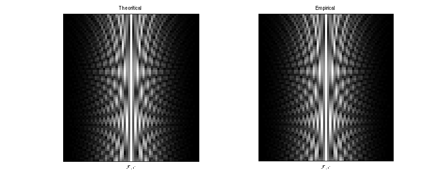
Compare theoritical and empirical
% Compute theoritical v vtheo=zeros(Hs,W); for n2=1:H+2*S vtheo(n2,:)=fftshift(ifft(ifftshift(vfourtheo(n2,:)))); end % Explicit formula for v (for one vertical line at m=offset) vtheo1=zeros((H+2*S),W); for n2=1:(H+2*S) for m=-M:M vtheo1(n2,m+M+1) = 255*exp(-((m-offset)/spread)^2/2); end end % Compute empirical v vemp=zeros(Hs,W); for n2=1:H+2*S vemp(n2,:)=fftshift(ifft(ifftshift(vfouremp(n2,:)))); end if plotComp f=figure; subplot(1,2,1); imagesc(abs(vtheo)); colormap gray; axis image; title('Theoritical'); xlabel('$$v^{\sharp}$$','Interpreter','latex'); set(gca,'xtick',[],'ytick',[]); subplot(1,2,2); imagesc(abs(vemp)); colormap gray; axis image; title('Empirical'); xlabel('$$v^{\sharp}$$','Interpreter','latex'); set(gca,'xtick',[],'ytick',[]); truesize(f,[300 300]); end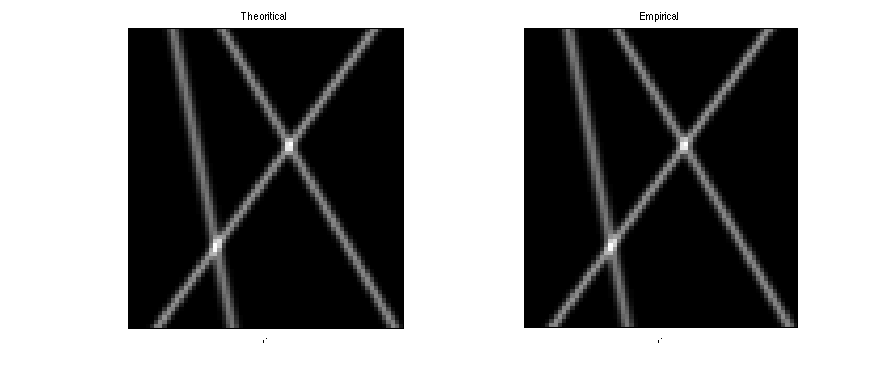
Compare theoritical and empirical 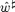
% Compute empirical wstar wemp=zeros((H+2*S),W); for m=1:W wemp(:,m)=vfouremp(:,m)./gfour(m); end if plotComp f=figure; subplot(1,2,1); imagesc(abs(wstar)); colormap gray; axis image; title('Theoritical'); xlabel('$$\hat w^{\sharp}$$','Interpreter','latex'); set(gca,'xtick',[],'ytick',[]); subplot(1,2,2); imagesc(abs(wemp)); colormap gray; axis image; title('Empirical'); xlabel('$$\hat w^{\sharp}$$','Interpreter','latex'); set(gca,'xtick',[],'ytick',[]); truesize(f,[300 300]); end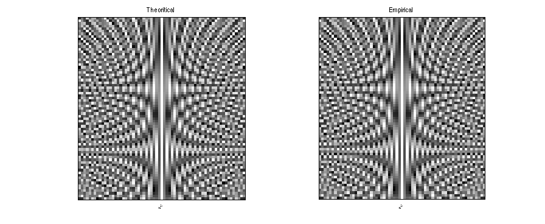
Compare theoritical and empirical 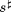
% Compute theoritical sstar stheo=zeros((H+2*S),W); for n2=1:(H+2*S) stheo(n2,:) = fftshift(ifft(ifftshift(wstar(n2,:)))); % horizontal FFT end % Compute empirical sstar semp=zeros((H+2*S),W); for n2=1:(H+2*S) semp(n2,:) = fftshift(ifft(ifftshift(wemp(n2,:)))); % horizontal FFT end if plotComp f=figure; subplot(1,2,1); imagesc(abs(stheo)); colormap gray; axis image; title('Theoritical'); xlabel('$$s^{\sharp}$$','Interpreter','latex'); set(gca,'xtick',[],'ytick',[]); subplot(1,2,2); imagesc(abs(semp)); colormap gray; axis image; title('Empirical'); xlabel('$$s^{\sharp}$$','Interpreter','latex'); set(gca,'xtick',[],'ytick',[]); truesize(f,[300 300]); end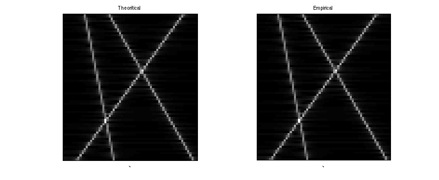
Compare theoritical and empirical 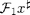
% Compute theoritical F_1(x) xfourtheo=conv2(vfourtheo,h,'valid'); % Compute empirical F_1(x) xfour=zeros(H,W); for n2=1:H xfour(n2,:)=fftshift(fft(ifftshift(xstar(n2,:)))); % horizontal FFT end if plotComp f=figure; subplot(1,2,1); imagesc(abs(xfourtheo)); colormap gray; axis image; title('Theoritical'); xlabel('$$\mathcal{F}_1 x^{\sharp}$$','Interpreter','latex'); set(gca,'xtick',[],'ytick',[]); subplot(1,2,2); imagesc(abs(xfour)); colormap gray; axis image; title('Empirical'); xlabel('$$\mathcal{F}_1 x^{\sharp}$$','Interpreter','latex'); set(gca,'xtick',[],'ytick',[]); truesize(f,[300 300]); end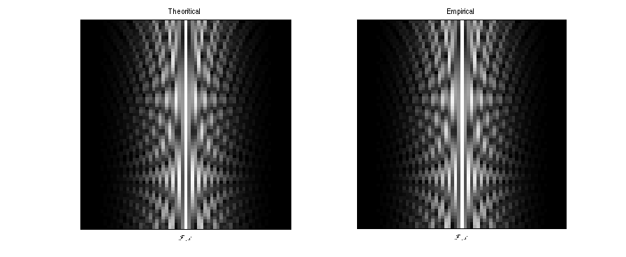
Compare theoritical and empirical 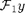
noisefour=zeros(H,W); for n2=1:H noisefour(n2,:)=fftshift(fft(ifftshift(noise(n2,:)))); % horizontal FFT end yfourtheo=xfourtheo+noisefour; yfour=zeros(H,W); for n2=1:H yfour(n2,:)=fftshift(fft(ifftshift(y(n2,:)))); % horizontal FFT end if plotComp f=figure; subplot(1,2,1); imagesc(abs(yfourtheo)); colormap gray; axis image; title('Theoritical'); xlabel('$$\mathcal{F}_1 y$$','Interpreter','latex'); set(gca,'xtick',[],'ytick',[]); subplot(1,2,2); imagesc(abs(yfour)); colormap gray; axis image; title('Empirical'); xlabel('$$\mathcal{F}_1 y$$','Interpreter','latex'); set(gca,'xtick',[],'ytick',[]); truesize(f,[300 300]); end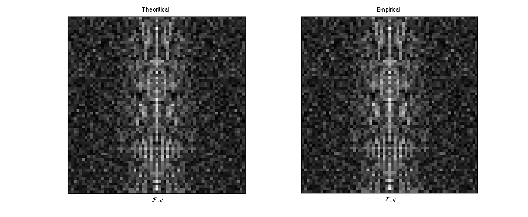